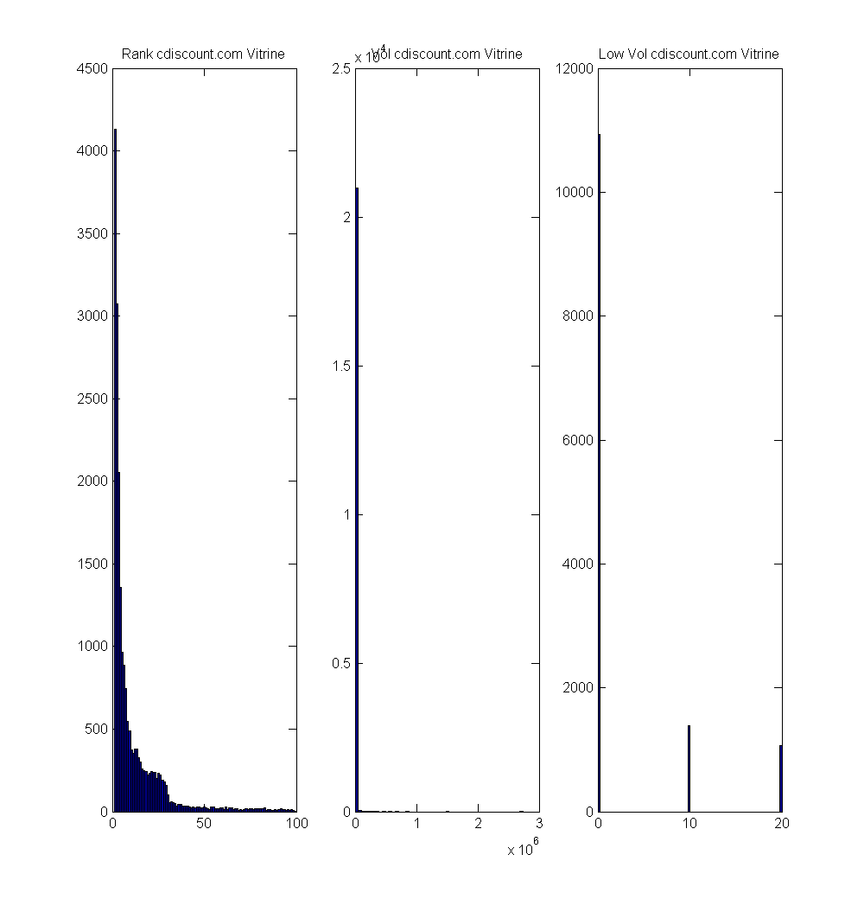

Reporting for the keywords referential
Contents
Getting data from the database referential & storing it efficiently in memory
Setting up magasins and concurrents
Metrics & numbers
total number of keywords
Keyword per magasin
Number of distinct keywords : 31933 for magasin : informatique
Percentage of keywords : 2.6037 for magasin : informatique
Number of distinct keywords : 14903 for magasin : musique-cd-dvd
Percentage of keywords : 1.2151 for magasin : musique-cd-dvd
Number of distinct keywords : 1275 for magasin : musique-instruments
Percentage of keywords : 0.10396 for magasin : musique-instruments
Number of distinct keywords : 13137 for magasin : dvd
Percentage of keywords : 1.0711 for magasin : dvd
Number of distinct keywords : 41875 for magasin : livres-bd
Percentage of keywords : 3.4143 for magasin : livres-bd
Number of distinct keywords : 12064 for magasin : jeux-pc-video-console
Percentage of keywords : 0.98365 for magasin : jeux-pc-video-console
Number of distinct keywords : 23273 for magasin : juniors
Percentage of keywords : 1.8976 for magasin : juniors
Number of distinct keywords : 9259 for magasin : high-tech
Percentage of keywords : 0.75494 for magasin : high-tech
Number of distinct keywords : 2359 for magasin : vin-champagne
Percentage of keywords : 0.19234 for magasin : vin-champagne
Number of distinct keywords : 7661 for magasin : photo-numerique
Percentage of keywords : 0.62465 for magasin : photo-numerique
Number of distinct keywords : 2226 for magasin : bagages
Percentage of keywords : 0.1815 for magasin : bagages
Number of distinct keywords : 18093 for magasin : electromenager
Percentage of keywords : 1.4752 for magasin : electromenager
Number of distinct keywords : 9486 for magasin : le-sport
Percentage of keywords : 0.77345 for magasin : le-sport
Number of distinct keywords : 17042 for magasin : telephonie
Percentage of keywords : 1.3895 for magasin : telephonie
Number of distinct keywords : 2857 for magasin : arts-loisirs
Percentage of keywords : 0.23295 for magasin : arts-loisirs
Number of distinct keywords : 14203 for magasin : pret-a-porter
Percentage of keywords : 1.1581 for magasin : pret-a-porter
Number of distinct keywords : 3696 for magasin : chaussures
Percentage of keywords : 0.30136 for magasin : chaussures
Number of distinct keywords : 725 for magasin : destockage
Percentage of keywords : 0.059113 for magasin : destockage
Number of distinct keywords : 12112 for magasin : auto
Percentage of keywords : 0.98756 for magasin : auto
Number of distinct keywords : 753293 for magasin : Unknown
Percentage of keywords : 61.4203 for magasin : Unknown
Number of distinct keywords : 40128 for magasin : maison
Percentage of keywords : 3.2719 for magasin : maison
Number of distinct keywords : 48 for magasin : boutique-cadeaux
Percentage of keywords : 0.0039137 for magasin : boutique-cadeaux
Number of distinct keywords : 4464 for magasin : bijouterie
Percentage of keywords : 0.36398 for magasin : bijouterie
Number of distinct keywords : 13549 for magasin : au-quotidien
Percentage of keywords : 1.1047 for magasin : au-quotidien
Number of distinct keywords : 1446 for magasin : jardin
Percentage of keywords : 0.1179 for magasin : jardin
Number of distinct keywords : 45 for magasin : personnalisation-3d
Percentage of keywords : 0.0036691 for magasin : personnalisation-3d
Number of distinct keywords : 2347 for magasin : animalerie
Percentage of keywords : 0.19136 for magasin : animalerie
coverage rate per entity
Number of distinct keywords wherecdiscount.com is ranking : 782375
Coverage rate where cdiscount.com is ranking : 63.7915
Number of distinct keywords whereamazon.fr is ranking : 903394
Coverage rate where amazon.fr is ranking : 73.6589
Number of distinct keywords whererueducommerce.fr is ranking : 627296
Coverage rate where rueducommerce.fr is ranking : 51.147
Number of distinct keywords whereconforama.fr is ranking : 124332
Coverage rate where conforama.fr is ranking : 10.1375
Number of distinct keywords wheredarty.com is ranking : 240441
Coverage rate where darty.com is ranking : 19.6045
Number of distinct keywords wherepriceminister.com is ranking : 682117
Coverage rate where priceminister.com is ranking : 55.6169
Number of distinct keywords wherezalando.fr is ranking : 41906
Coverage rate where zalando.fr is ranking : 3.4168
Number of distinct keywords whereldlc.com is ranking : 172775
Coverage rate where ldlc.com is ranking : 14.0873
Number of distinct keywords whereboulanger.fr is ranking : 178076
Coverage rate where boulanger.fr is ranking : 14.5196
Number of distinct keywords wherefrench.alibaba.com is ranking : 0
Coverage rate where french.alibaba.com is ranking : 0
Number of distinct keywords wherepixmania.fr is ranking : 263296
Coverage rate where pixmania.fr is ranking : 21.468
average number of urls per keyword per entity
Average number of urls per ranking keyword 1.4295
Average number of urls per ranking keyword 1.2411
Average number of urls per ranking keyword 1.1258
Average number of urls per ranking keyword 1.0651
Average number of urls per ranking keyword 1.1819
Average number of urls per ranking keyword 1.0927
Average number of urls per ranking keyword 1.1043
Average number of urls per ranking keyword 1.1113
Average number of urls per ranking keyword 1.0596
Average number of urls per ranking keyword NaN
Average number of urls per ranking keyword 1.0287
average position per entity
Average search position for cdiscount.com : 11.7378
Average search position for amazon.fr : 15.7125
Average search position for rueducommerce.fr : 21.6776
Average search position for conforama.fr : 29.748
Average search position for darty.com : 19.1171
Average search position for priceminister.com : 25.8258
Average search position for zalando.fr : 22.9552
Average search position for ldlc.com : 22.5242
Average search position for boulanger.fr : 27.3959
Average search position for french.alibaba.com : NaN
Average search position for pixmania.fr : 33.3243
average volume per entity
Average search volume for cdiscount.com : 328.7358
Number of keywords : 23996 where cdiscount.com ranks for magasin : informatique
Coverage rate for magasin informatique where cdiscount.com is ranking : 1.9565
Average search position for cdiscount.com in magasin informatique : 13.4971
Average search volume for cdiscount.com in magasin informatique : 427.7777
Number of keywords : 1691 where cdiscount.com ranks for magasin : musique-cd-dvd
Coverage rate for magasin musique-cd-dvd where cdiscount.com is ranking : 0.13788
Average search position for cdiscount.com in magasin musique-cd-dvd : 35.3671
Average search volume for cdiscount.com in magasin musique-cd-dvd : 629.0589
Number of keywords : 601 where cdiscount.com ranks for magasin : musique-instruments
Coverage rate for magasin musique-instruments where cdiscount.com is ranking : 0.049003
Average search position for cdiscount.com in magasin musique-instruments : 29.6717
Average search volume for cdiscount.com in magasin musique-instruments : 510.5927
Number of keywords : 4076 where cdiscount.com ranks for magasin : dvd
Coverage rate for magasin dvd where cdiscount.com is ranking : 0.33234
Average search position for cdiscount.com in magasin dvd : 28.1965
Average search volume for cdiscount.com in magasin dvd : 1872.5366
Number of keywords : 7299 where cdiscount.com ranks for magasin : livres-bd
Coverage rate for magasin livres-bd where cdiscount.com is ranking : 0.59513
Average search position for cdiscount.com in magasin livres-bd : 39.4773
Average search volume for cdiscount.com in magasin livres-bd : 557.9817
Number of keywords : 7352 where cdiscount.com ranks for magasin : jeux-pc-video-console
Coverage rate for magasin jeux-pc-video-console where cdiscount.com is ranking : 0.59945
Average search position for cdiscount.com in magasin jeux-pc-video-console : 18.2819
Average search volume for cdiscount.com in magasin jeux-pc-video-console : 1318.5247
Number of keywords : 17663 where cdiscount.com ranks for magasin : juniors
Coverage rate for magasin juniors where cdiscount.com is ranking : 1.4402
Average search position for cdiscount.com in magasin juniors : 14.3122
Average search volume for cdiscount.com in magasin juniors : 535.52
Number of keywords : 6848 where cdiscount.com ranks for magasin : high-tech
Coverage rate for magasin high-tech where cdiscount.com is ranking : 0.55836
Average search position for cdiscount.com in magasin high-tech : 14.501
Average search volume for cdiscount.com in magasin high-tech : 570.4156
Number of keywords : 1278 where cdiscount.com ranks for magasin : vin-champagne
Coverage rate for magasin vin-champagne where cdiscount.com is ranking : 0.1042
Average search position for cdiscount.com in magasin vin-champagne : 16.5458
Average search volume for cdiscount.com in magasin vin-champagne : 538.1614
Number of keywords : 5978 where cdiscount.com ranks for magasin : photo-numerique
Coverage rate for magasin photo-numerique where cdiscount.com is ranking : 0.48742
Average search position for cdiscount.com in magasin photo-numerique : 17.4468
Average search volume for cdiscount.com in magasin photo-numerique : 323.1081
Number of keywords : 1607 where cdiscount.com ranks for magasin : bagages
Coverage rate for magasin bagages where cdiscount.com is ranking : 0.13103
Average search position for cdiscount.com in magasin bagages : 14.847
Average search volume for cdiscount.com in magasin bagages : 497.8825
Number of keywords : 15164 where cdiscount.com ranks for magasin : electromenager
Coverage rate for magasin electromenager where cdiscount.com is ranking : 1.2364
Average search position for cdiscount.com in magasin electromenager : 9.6027
Average search volume for cdiscount.com in magasin electromenager : 308.1208
Number of keywords : 6493 where cdiscount.com ranks for magasin : le-sport
Coverage rate for magasin le-sport where cdiscount.com is ranking : 0.52941
Average search position for cdiscount.com in magasin le-sport : 21.2639
Average search volume for cdiscount.com in magasin le-sport : 455.2141
Number of keywords : 14749 where cdiscount.com ranks for magasin : telephonie
Coverage rate for magasin telephonie where cdiscount.com is ranking : 1.2026
Average search position for cdiscount.com in magasin telephonie : 8.4364
Average search volume for cdiscount.com in magasin telephonie : 458.8598
Number of keywords : 1741 where cdiscount.com ranks for magasin : arts-loisirs
Coverage rate for magasin arts-loisirs where cdiscount.com is ranking : 0.14195
Average search position for cdiscount.com in magasin arts-loisirs : 25.0903
Average search volume for cdiscount.com in magasin arts-loisirs : 336.8791
Number of keywords : 10561 where cdiscount.com ranks for magasin : pret-a-porter
Coverage rate for magasin pret-a-porter where cdiscount.com is ranking : 0.8611
Average search position for cdiscount.com in magasin pret-a-porter : 14.7943
Average search volume for cdiscount.com in magasin pret-a-porter : 484.4888
Number of keywords : 2898 where cdiscount.com ranks for magasin : chaussures
Coverage rate for magasin chaussures where cdiscount.com is ranking : 0.23629
Average search position for cdiscount.com in magasin chaussures : 13.8732
Average search volume for cdiscount.com in magasin chaussures : 876.2558
Number of keywords : 616 where cdiscount.com ranks for magasin : destockage
Coverage rate for magasin destockage where cdiscount.com is ranking : 0.050226
Average search position for cdiscount.com in magasin destockage : 9.0805
Average search volume for cdiscount.com in magasin destockage : 295.0481
Number of keywords : 8988 where cdiscount.com ranks for magasin : auto
Coverage rate for magasin auto where cdiscount.com is ranking : 0.73284
Average search position for cdiscount.com in magasin auto : 14.1512
Average search volume for cdiscount.com in magasin auto : 445.2277
Number of keywords : 535449 where cdiscount.com ranks for magasin : Unknown
Coverage rate for magasin Unknown where cdiscount.com is ranking : 43.6582
Average search position for cdiscount.com in magasin Unknown : 10.52
Average search volume for cdiscount.com in magasin Unknown : 307.003
Number of keywords : 31192 where cdiscount.com ranks for magasin : maison
Coverage rate for magasin maison where cdiscount.com is ranking : 2.5433
Average search position for cdiscount.com in magasin maison : 12.6716
Average search volume for cdiscount.com in magasin maison : 385.0404
Number of keywords : 24 where cdiscount.com ranks for magasin : boutique-cadeaux
Coverage rate for magasin boutique-cadeaux where cdiscount.com is ranking : 0.0019569
Average search position for cdiscount.com in magasin boutique-cadeaux : 20.2143
Average search volume for cdiscount.com in magasin boutique-cadeaux : 5333.5714
Number of keywords : 2897 where cdiscount.com ranks for magasin : bijouterie
Coverage rate for magasin bijouterie where cdiscount.com is ranking : 0.23621
Average search position for cdiscount.com in magasin bijouterie : 19.7662
Average search volume for cdiscount.com in magasin bijouterie : 475
Number of keywords : 7927 where cdiscount.com ranks for magasin : au-quotidien
Coverage rate for magasin au-quotidien where cdiscount.com is ranking : 0.64633
Average search position for cdiscount.com in magasin au-quotidien : 26.0137
Average search volume for cdiscount.com in magasin au-quotidien : 533.1696
Number of keywords : 1054 where cdiscount.com ranks for magasin : jardin
Coverage rate for magasin jardin where cdiscount.com is ranking : 0.085939
Average search position for cdiscount.com in magasin jardin : 13.3655
Average search volume for cdiscount.com in magasin jardin : 288.8188
Number of keywords : 34 where cdiscount.com ranks for magasin : personnalisation-3d
Coverage rate for magasin personnalisation-3d where cdiscount.com is ranking : 0.0027722
Average search position for cdiscount.com in magasin personnalisation-3d : 16.7805
Average search volume for cdiscount.com in magasin personnalisation-3d : 136.8293
Number of keywords : 1578 where cdiscount.com ranks for magasin : animalerie
Coverage rate for magasin animalerie where cdiscount.com is ranking : 0.12866
Average search position for cdiscount.com in magasin animalerie : 18.7456
Average search volume for cdiscount.com in magasin animalerie : 614.1594
Average search volume for amazon.fr : 793.6992
Number of keywords : 26353 where amazon.fr ranks for magasin : informatique
Coverage rate for magasin informatique where amazon.fr is ranking : 2.1487
Average search position for amazon.fr in magasin informatique : 14.1893
Average search volume for amazon.fr in magasin informatique : 2090.8715
Number of keywords : 9824 where amazon.fr ranks for magasin : musique-cd-dvd
Coverage rate for magasin musique-cd-dvd where amazon.fr is ranking : 0.80101
Average search position for amazon.fr in magasin musique-cd-dvd : 22.3942
Average search volume for amazon.fr in magasin musique-cd-dvd : 1724.1146
Number of keywords : 1014 where amazon.fr ranks for magasin : musique-instruments
Coverage rate for magasin musique-instruments where amazon.fr is ranking : 0.082677
Average search position for amazon.fr in magasin musique-instruments : 18.8206
Average search volume for amazon.fr in magasin musique-instruments : 764.0946
Number of keywords : 9124 where amazon.fr ranks for magasin : dvd
Coverage rate for magasin dvd where amazon.fr is ranking : 0.74393
Average search position for amazon.fr in magasin dvd : 18.7612
Average search volume for amazon.fr in magasin dvd : 2901.1991
Number of keywords : 33132 where amazon.fr ranks for magasin : livres-bd
Coverage rate for magasin livres-bd where amazon.fr is ranking : 2.7014
Average search position for amazon.fr in magasin livres-bd : 16.1925
Average search volume for amazon.fr in magasin livres-bd : 1405.1939
Number of keywords : 9264 where amazon.fr ranks for magasin : jeux-pc-video-console
Coverage rate for magasin jeux-pc-video-console where amazon.fr is ranking : 0.75535
Average search position for amazon.fr in magasin jeux-pc-video-console : 15.6144
Average search volume for amazon.fr in magasin jeux-pc-video-console : 1516.6489
Number of keywords : 20084 where amazon.fr ranks for magasin : juniors
Coverage rate for magasin juniors where amazon.fr is ranking : 1.6376
Average search position for amazon.fr in magasin juniors : 13.4489
Average search volume for amazon.fr in magasin juniors : 718.003
Number of keywords : 7513 where amazon.fr ranks for magasin : high-tech
Coverage rate for magasin high-tech where amazon.fr is ranking : 0.61258
Average search position for amazon.fr in magasin high-tech : 14.7922
Average search volume for amazon.fr in magasin high-tech : 620.1798
Number of keywords : 927 where amazon.fr ranks for magasin : vin-champagne
Coverage rate for magasin vin-champagne where amazon.fr is ranking : 0.075584
Average search position for amazon.fr in magasin vin-champagne : 32.2727
Average search volume for amazon.fr in magasin vin-champagne : 1670.2031
Number of keywords : 6717 where amazon.fr ranks for magasin : photo-numerique
Coverage rate for magasin photo-numerique where amazon.fr is ranking : 0.54768
Average search position for amazon.fr in magasin photo-numerique : 12.1166
Average search volume for amazon.fr in magasin photo-numerique : 438.5146
Number of keywords : 1870 where amazon.fr ranks for magasin : bagages
Coverage rate for magasin bagages where amazon.fr is ranking : 0.15247
Average search position for amazon.fr in magasin bagages : 13.8836
Average search volume for amazon.fr in magasin bagages : 897.7316
Number of keywords : 15288 where amazon.fr ranks for magasin : electromenager
Coverage rate for magasin electromenager where amazon.fr is ranking : 1.2465
Average search position for amazon.fr in magasin electromenager : 14.9171
Average search volume for amazon.fr in magasin electromenager : 541.0038
Number of keywords : 7371 where amazon.fr ranks for magasin : le-sport
Coverage rate for magasin le-sport where amazon.fr is ranking : 0.601
Average search position for amazon.fr in magasin le-sport : 20.2676
Average search volume for amazon.fr in magasin le-sport : 1764.9983
Number of keywords : 15281 where amazon.fr ranks for magasin : telephonie
Coverage rate for magasin telephonie where amazon.fr is ranking : 1.2459
Average search position for amazon.fr in magasin telephonie : 11.5999
Average search volume for amazon.fr in magasin telephonie : 509.8907
Number of keywords : 2341 where amazon.fr ranks for magasin : arts-loisirs
Coverage rate for magasin arts-loisirs where amazon.fr is ranking : 0.19088
Average search position for amazon.fr in magasin arts-loisirs : 15.0619
Average search volume for amazon.fr in magasin arts-loisirs : 762.1194
Number of keywords : 11858 where amazon.fr ranks for magasin : pret-a-porter
Coverage rate for magasin pret-a-porter where amazon.fr is ranking : 0.96685
Average search position for amazon.fr in magasin pret-a-porter : 16.1077
Average search volume for amazon.fr in magasin pret-a-porter : 802.9573
Number of keywords : 2963 where amazon.fr ranks for magasin : chaussures
Coverage rate for magasin chaussures where amazon.fr is ranking : 0.24159
Average search position for amazon.fr in magasin chaussures : 19.1579
Average search volume for amazon.fr in magasin chaussures : 1402.7764
Number of keywords : 609 where amazon.fr ranks for magasin : destockage
Coverage rate for magasin destockage where amazon.fr is ranking : 0.049655
Average search position for amazon.fr in magasin destockage : 14.9038
Average search volume for amazon.fr in magasin destockage : 511.0804
Number of keywords : 9606 where amazon.fr ranks for magasin : auto
Coverage rate for magasin auto where amazon.fr is ranking : 0.78323
Average search position for amazon.fr in magasin auto : 18.5195
Average search volume for amazon.fr in magasin auto : 446.2957
Number of keywords : 573395 where amazon.fr ranks for magasin : Unknown
Coverage rate for magasin Unknown where amazon.fr is ranking : 46.7522
Average search position for amazon.fr in magasin Unknown : 15.3948
Average search volume for amazon.fr in magasin Unknown : 731.2712
Number of keywords : 32430 where amazon.fr ranks for magasin : maison
Coverage rate for magasin maison where amazon.fr is ranking : 2.6442
Average search position for amazon.fr in magasin maison : 18.3186
Average search volume for amazon.fr in magasin maison : 898.562
Number of keywords : 23 where amazon.fr ranks for magasin : boutique-cadeaux
Coverage rate for magasin boutique-cadeaux where amazon.fr is ranking : 0.0018753
Average search position for amazon.fr in magasin boutique-cadeaux : 29.96
Average search volume for amazon.fr in magasin boutique-cadeaux : 11810.8
Number of keywords : 3546 where amazon.fr ranks for magasin : bijouterie
Coverage rate for magasin bijouterie where amazon.fr is ranking : 0.28913
Average search position for amazon.fr in magasin bijouterie : 17.1653
Average search volume for amazon.fr in magasin bijouterie : 718.8419
Number of keywords : 10363 where amazon.fr ranks for magasin : au-quotidien
Coverage rate for magasin au-quotidien where amazon.fr is ranking : 0.84495
Average search position for amazon.fr in magasin au-quotidien : 20.2652
Average search volume for amazon.fr in magasin au-quotidien : 1204.447
Number of keywords : 1016 where amazon.fr ranks for magasin : jardin
Coverage rate for magasin jardin where amazon.fr is ranking : 0.08284
Average search position for amazon.fr in magasin jardin : 25.7242
Average search volume for amazon.fr in magasin jardin : 442.4704
Number of keywords : 31 where amazon.fr ranks for magasin : personnalisation-3d
Coverage rate for magasin personnalisation-3d where amazon.fr is ranking : 0.0025276
Average search position for amazon.fr in magasin personnalisation-3d : 22.1389
Average search volume for amazon.fr in magasin personnalisation-3d : 1189.4444
Number of keywords : 1883 where amazon.fr ranks for magasin : animalerie
Coverage rate for magasin animalerie where amazon.fr is ranking : 0.15353
Average search position for amazon.fr in magasin animalerie : 19.4663
Average search volume for amazon.fr in magasin animalerie : 1108.1682
Average search volume for rueducommerce.fr : 344.5806
Number of keywords : 17505 where rueducommerce.fr ranks for magasin : informatique
Coverage rate for magasin informatique where rueducommerce.fr is ranking : 1.4273
Average search position for rueducommerce.fr in magasin informatique : 25.3371
Average search volume for rueducommerce.fr in magasin informatique : 372.9641
Number of keywords : 1227 where rueducommerce.fr ranks for magasin : musique-cd-dvd
Coverage rate for magasin musique-cd-dvd where rueducommerce.fr is ranking : 0.10004
Average search position for rueducommerce.fr in magasin musique-cd-dvd : 41.2155
Average search volume for rueducommerce.fr in magasin musique-cd-dvd : 1000.3946
Number of keywords : 497 where rueducommerce.fr ranks for magasin : musique-instruments
Coverage rate for magasin musique-instruments where rueducommerce.fr is ranking : 0.040523
Average search position for rueducommerce.fr in magasin musique-instruments : 32.9656
Average search volume for rueducommerce.fr in magasin musique-instruments : 407.5526
Number of keywords : 2246 where rueducommerce.fr ranks for magasin : dvd
Coverage rate for magasin dvd where rueducommerce.fr is ranking : 0.18313
Average search position for rueducommerce.fr in magasin dvd : 37.2648
Average search volume for rueducommerce.fr in magasin dvd : 809.4953
Number of keywords : 5545 where rueducommerce.fr ranks for magasin : livres-bd
Coverage rate for magasin livres-bd where rueducommerce.fr is ranking : 0.45212
Average search position for rueducommerce.fr in magasin livres-bd : 41.8578
Average search volume for rueducommerce.fr in magasin livres-bd : 720.066
Number of keywords : 4027 where rueducommerce.fr ranks for magasin : jeux-pc-video-console
Coverage rate for magasin jeux-pc-video-console where rueducommerce.fr is ranking : 0.32834
Average search position for rueducommerce.fr in magasin jeux-pc-video-console : 36.3265
Average search volume for rueducommerce.fr in magasin jeux-pc-video-console : 727.8129
Number of keywords : 13562 where rueducommerce.fr ranks for magasin : juniors
Coverage rate for magasin juniors where rueducommerce.fr is ranking : 1.1058
Average search position for rueducommerce.fr in magasin juniors : 26.0679
Average search volume for rueducommerce.fr in magasin juniors : 219.9004
Number of keywords : 4714 where rueducommerce.fr ranks for magasin : high-tech
Coverage rate for magasin high-tech where rueducommerce.fr is ranking : 0.38436
Average search position for rueducommerce.fr in magasin high-tech : 28.153
Average search volume for rueducommerce.fr in magasin high-tech : 1164.1864
Number of keywords : 459 where rueducommerce.fr ranks for magasin : vin-champagne
Coverage rate for magasin vin-champagne where rueducommerce.fr is ranking : 0.037425
Average search position for rueducommerce.fr in magasin vin-champagne : 35.996
Average search volume for rueducommerce.fr in magasin vin-champagne : 267.834
Number of keywords : 4205 where rueducommerce.fr ranks for magasin : photo-numerique
Coverage rate for magasin photo-numerique where rueducommerce.fr is ranking : 0.34286
Average search position for rueducommerce.fr in magasin photo-numerique : 31.3211
Average search volume for rueducommerce.fr in magasin photo-numerique : 311.5635
Number of keywords : 1270 where rueducommerce.fr ranks for magasin : bagages
Coverage rate for magasin bagages where rueducommerce.fr is ranking : 0.10355
Average search position for rueducommerce.fr in magasin bagages : 20.8542
Average search volume for rueducommerce.fr in magasin bagages : 569.226
Number of keywords : 12880 where rueducommerce.fr ranks for magasin : electromenager
Coverage rate for magasin electromenager where rueducommerce.fr is ranking : 1.0502
Average search position for rueducommerce.fr in magasin electromenager : 19.3761
Average search volume for rueducommerce.fr in magasin electromenager : 257.5164
Number of keywords : 4872 where rueducommerce.fr ranks for magasin : le-sport
Coverage rate for magasin le-sport where rueducommerce.fr is ranking : 0.39724
Average search position for rueducommerce.fr in magasin le-sport : 27.6577
Average search volume for rueducommerce.fr in magasin le-sport : 579.0909
Number of keywords : 11835 where rueducommerce.fr ranks for magasin : telephonie
Coverage rate for magasin telephonie where rueducommerce.fr is ranking : 0.96498
Average search position for rueducommerce.fr in magasin telephonie : 22.8945
Average search volume for rueducommerce.fr in magasin telephonie : 955.8523
Number of keywords : 1275 where rueducommerce.fr ranks for magasin : arts-loisirs
Coverage rate for magasin arts-loisirs where rueducommerce.fr is ranking : 0.10396
Average search position for rueducommerce.fr in magasin arts-loisirs : 28.3522
Average search volume for rueducommerce.fr in magasin arts-loisirs : 700.7738
Number of keywords : 8945 where rueducommerce.fr ranks for magasin : pret-a-porter
Coverage rate for magasin pret-a-porter where rueducommerce.fr is ranking : 0.72934
Average search position for rueducommerce.fr in magasin pret-a-porter : 23.9077
Average search volume for rueducommerce.fr in magasin pret-a-porter : 365.0295
Number of keywords : 2590 where rueducommerce.fr ranks for magasin : chaussures
Coverage rate for magasin chaussures where rueducommerce.fr is ranking : 0.21118
Average search position for rueducommerce.fr in magasin chaussures : 16.7169
Average search volume for rueducommerce.fr in magasin chaussures : 758.399
Number of keywords : 498 where rueducommerce.fr ranks for magasin : destockage
Coverage rate for magasin destockage where rueducommerce.fr is ranking : 0.040605
Average search position for rueducommerce.fr in magasin destockage : 26.3865
Average search volume for rueducommerce.fr in magasin destockage : 361.5947
Number of keywords : 7120 where rueducommerce.fr ranks for magasin : auto
Coverage rate for magasin auto where rueducommerce.fr is ranking : 0.58053
Average search position for rueducommerce.fr in magasin auto : 22.6721
Average search volume for rueducommerce.fr in magasin auto : 368.0563
Number of keywords : 440427 where rueducommerce.fr ranks for magasin : Unknown
Coverage rate for magasin Unknown where rueducommerce.fr is ranking : 35.9105
Average search position for rueducommerce.fr in magasin Unknown : 20.5862
Average search volume for rueducommerce.fr in magasin Unknown : 323.7303
Number of keywords : 27137 where rueducommerce.fr ranks for magasin : maison
Coverage rate for magasin maison where rueducommerce.fr is ranking : 2.2126
Average search position for rueducommerce.fr in magasin maison : 17.3598
Average search volume for rueducommerce.fr in magasin maison : 513.2167
Number of keywords : 6 where rueducommerce.fr ranks for magasin : boutique-cadeaux
Coverage rate for magasin boutique-cadeaux where rueducommerce.fr is ranking : 0.00048921
Average search position for rueducommerce.fr in magasin boutique-cadeaux : 55
Average search volume for rueducommerce.fr in magasin boutique-cadeaux : 20886.6667
Number of keywords : 1880 where rueducommerce.fr ranks for magasin : bijouterie
Coverage rate for magasin bijouterie where rueducommerce.fr is ranking : 0.15329
Average search position for rueducommerce.fr in magasin bijouterie : 26.4637
Average search volume for rueducommerce.fr in magasin bijouterie : 526.3456
Number of keywords : 3636 where rueducommerce.fr ranks for magasin : au-quotidien
Coverage rate for magasin au-quotidien where rueducommerce.fr is ranking : 0.29646
Average search position for rueducommerce.fr in magasin au-quotidien : 36.3511
Average search volume for rueducommerce.fr in magasin au-quotidien : 415.4185
Number of keywords : 850 where rueducommerce.fr ranks for magasin : jardin
Coverage rate for magasin jardin where rueducommerce.fr is ranking : 0.069305
Average search position for rueducommerce.fr in magasin jardin : 23.1522
Average search volume for rueducommerce.fr in magasin jardin : 163.5662
Number of keywords : 17 where rueducommerce.fr ranks for magasin : personnalisation-3d
Coverage rate for magasin personnalisation-3d where rueducommerce.fr is ranking : 0.0013861
Average search position for rueducommerce.fr in magasin personnalisation-3d : 30.1667
Average search volume for rueducommerce.fr in magasin personnalisation-3d : 156.1111
Number of keywords : 1164 where rueducommerce.fr ranks for magasin : animalerie
Coverage rate for magasin animalerie where rueducommerce.fr is ranking : 0.094908
Average search position for rueducommerce.fr in magasin animalerie : 28.2594
Average search volume for rueducommerce.fr in magasin animalerie : 974.8522
Average search volume for conforama.fr : 348.2202
Number of keywords : 2360 where conforama.fr ranks for magasin : informatique
Coverage rate for magasin informatique where conforama.fr is ranking : 0.19242
Average search position for conforama.fr in magasin informatique : 40.7769
Average search volume for conforama.fr in magasin informatique : 535.568
Number of keywords : 43 where conforama.fr ranks for magasin : musique-cd-dvd
Coverage rate for magasin musique-cd-dvd where conforama.fr is ranking : 0.003506
Average search position for conforama.fr in magasin musique-cd-dvd : 33.9778
Average search volume for conforama.fr in magasin musique-cd-dvd : 624
Number of keywords : 30 where conforama.fr ranks for magasin : musique-instruments
Coverage rate for magasin musique-instruments where conforama.fr is ranking : 0.0024461
Average search position for conforama.fr in magasin musique-instruments : 31.5294
Average search volume for conforama.fr in magasin musique-instruments : 1584.1176
Number of keywords : 66 where conforama.fr ranks for magasin : dvd
Coverage rate for magasin dvd where conforama.fr is ranking : 0.0053814
Average search position for conforama.fr in magasin dvd : 32.0625
Average search volume for conforama.fr in magasin dvd : 3180
Number of keywords : 120 where conforama.fr ranks for magasin : livres-bd
Coverage rate for magasin livres-bd where conforama.fr is ranking : 0.0097843
Average search position for conforama.fr in magasin livres-bd : 33.3864
Average search volume for conforama.fr in magasin livres-bd : 22050
Number of keywords : 114 where conforama.fr ranks for magasin : jeux-pc-video-console
Coverage rate for magasin jeux-pc-video-console where conforama.fr is ranking : 0.0092951
Average search position for conforama.fr in magasin jeux-pc-video-console : 40.4274
Average search volume for conforama.fr in magasin jeux-pc-video-console : 480.1709
Number of keywords : 585 where conforama.fr ranks for magasin : juniors
Coverage rate for magasin juniors where conforama.fr is ranking : 0.047698
Average search position for conforama.fr in magasin juniors : 35.4043
Average search volume for conforama.fr in magasin juniors : 486.8903
Number of keywords : 1303 where conforama.fr ranks for magasin : high-tech
Coverage rate for magasin high-tech where conforama.fr is ranking : 0.10624
Average search position for conforama.fr in magasin high-tech : 32.2363
Average search volume for conforama.fr in magasin high-tech : 1530.5481
Number of keywords : 38 where conforama.fr ranks for magasin : vin-champagne
Coverage rate for magasin vin-champagne where conforama.fr is ranking : 0.0030984
Average search position for conforama.fr in magasin vin-champagne : 48.0256
Average search volume for conforama.fr in magasin vin-champagne : 588.9744
Number of keywords : 1131 where conforama.fr ranks for magasin : photo-numerique
Coverage rate for magasin photo-numerique where conforama.fr is ranking : 0.092217
Average search position for conforama.fr in magasin photo-numerique : 36.9947
Average search volume for conforama.fr in magasin photo-numerique : 620.6743
Number of keywords : 32 where conforama.fr ranks for magasin : bagages
Coverage rate for magasin bagages where conforama.fr is ranking : 0.0026091
Average search position for conforama.fr in magasin bagages : 28.2121
Average search volume for conforama.fr in magasin bagages : 167.8788
Number of keywords : 5567 where conforama.fr ranks for magasin : electromenager
Coverage rate for magasin electromenager where conforama.fr is ranking : 0.45391
Average search position for conforama.fr in magasin electromenager : 28.4432
Average search volume for conforama.fr in magasin electromenager : 411.2632
Number of keywords : 79 where conforama.fr ranks for magasin : le-sport
Coverage rate for magasin le-sport where conforama.fr is ranking : 0.0064413
Average search position for conforama.fr in magasin le-sport : 41.9759
Average search volume for conforama.fr in magasin le-sport : 416.747
Number of keywords : 1047 where conforama.fr ranks for magasin : telephonie
Coverage rate for magasin telephonie where conforama.fr is ranking : 0.085368
Average search position for conforama.fr in magasin telephonie : 41.3017
Average search volume for conforama.fr in magasin telephonie : 590.8835
Number of keywords : 48 where conforama.fr ranks for magasin : arts-loisirs
Coverage rate for magasin arts-loisirs where conforama.fr is ranking : 0.0039137
Average search position for conforama.fr in magasin arts-loisirs : 35.4151
Average search volume for conforama.fr in magasin arts-loisirs : 277.5472
Number of keywords : 442 where conforama.fr ranks for magasin : pret-a-porter
Coverage rate for magasin pret-a-porter where conforama.fr is ranking : 0.036039
Average search position for conforama.fr in magasin pret-a-porter : 38.1996
Average search volume for conforama.fr in magasin pret-a-porter : 526.3136
Number of keywords : 11 where conforama.fr ranks for magasin : chaussures
Coverage rate for magasin chaussures where conforama.fr is ranking : 0.00089689
Average search position for conforama.fr in magasin chaussures : 51.0909
Average search volume for conforama.fr in magasin chaussures : 3500.9091
Number of keywords : 109 where conforama.fr ranks for magasin : destockage
Coverage rate for magasin destockage where conforama.fr is ranking : 0.0088874
Average search position for conforama.fr in magasin destockage : 43.2883
Average search volume for conforama.fr in magasin destockage : 246.5766
Number of keywords : 196 where conforama.fr ranks for magasin : auto
Coverage rate for magasin auto where conforama.fr is ranking : 0.015981
Average search position for conforama.fr in magasin auto : 45.4328
Average search volume for conforama.fr in magasin auto : 276.3682
Number of keywords : 96554 where conforama.fr ranks for magasin : Unknown
Coverage rate for magasin Unknown where conforama.fr is ranking : 7.8726
Average search position for conforama.fr in magasin Unknown : 29.4146
Average search volume for conforama.fr in magasin Unknown : 305.0842
Number of keywords : 6999 where conforama.fr ranks for magasin : maison
Coverage rate for magasin maison where conforama.fr is ranking : 0.57067
Average search position for conforama.fr in magasin maison : 25.3383
Average search volume for conforama.fr in magasin maison : 287.3149
Number of keywords : 5 where conforama.fr ranks for magasin : boutique-cadeaux
Coverage rate for magasin boutique-cadeaux where conforama.fr is ranking : 0.00040768
Average search position for conforama.fr in magasin boutique-cadeaux : 36.6
Average search volume for conforama.fr in magasin boutique-cadeaux : 560
Number of keywords : 46 where conforama.fr ranks for magasin : bijouterie
Coverage rate for magasin bijouterie where conforama.fr is ranking : 0.0037506
Average search position for conforama.fr in magasin bijouterie : 39.0638
Average search volume for conforama.fr in magasin bijouterie : 210
Number of keywords : 206 where conforama.fr ranks for magasin : au-quotidien
Coverage rate for magasin au-quotidien where conforama.fr is ranking : 0.016796
Average search position for conforama.fr in magasin au-quotidien : 43.2584
Average search volume for conforama.fr in magasin au-quotidien : 562.0096
Number of keywords : 20 where conforama.fr ranks for magasin : jardin
Coverage rate for magasin jardin where conforama.fr is ranking : 0.0016307
Average search position for conforama.fr in magasin jardin : 51.8
Average search volume for conforama.fr in magasin jardin : 1863.5
Number of keywords : 3 where conforama.fr ranks for magasin : personnalisation-3d
Coverage rate for magasin personnalisation-3d where conforama.fr is ranking : 0.00024461
Average search position for conforama.fr in magasin personnalisation-3d : 23.3333
Average search volume for conforama.fr in magasin personnalisation-3d : 740
Number of keywords : 31 where conforama.fr ranks for magasin : animalerie
Coverage rate for magasin animalerie where conforama.fr is ranking : 0.0025276
Average search position for conforama.fr in magasin animalerie : 35.9032
Average search volume for conforama.fr in magasin animalerie : 1707.0968
Average search volume for darty.com : 640.2542
Number of keywords : 10606 where darty.com ranks for magasin : informatique
Coverage rate for magasin informatique where darty.com is ranking : 0.86477
Average search position for darty.com in magasin informatique : 21.065
Average search volume for darty.com in magasin informatique : 572.5748
Number of keywords : 100 where darty.com ranks for magasin : musique-cd-dvd
Coverage rate for magasin musique-cd-dvd where darty.com is ranking : 0.0081536
Average search position for darty.com in magasin musique-cd-dvd : 33.1034
Average search volume for darty.com in magasin musique-cd-dvd : 863.6207
Number of keywords : 40 where darty.com ranks for magasin : musique-instruments
Coverage rate for magasin musique-instruments where darty.com is ranking : 0.0032614
Average search position for darty.com in magasin musique-instruments : 31.4634
Average search volume for darty.com in magasin musique-instruments : 736.8293
Number of keywords : 160 where darty.com ranks for magasin : dvd
Coverage rate for magasin dvd where darty.com is ranking : 0.013046
Average search position for darty.com in magasin dvd : 44.4405
Average search volume for darty.com in magasin dvd : 4265.9524
Number of keywords : 414 where darty.com ranks for magasin : livres-bd
Coverage rate for magasin livres-bd where darty.com is ranking : 0.033756
Average search position for darty.com in magasin livres-bd : 40.8989
Average search volume for darty.com in magasin livres-bd : 9421.1034
Number of keywords : 2511 where darty.com ranks for magasin : jeux-pc-video-console
Coverage rate for magasin jeux-pc-video-console where darty.com is ranking : 0.20474
Average search position for darty.com in magasin jeux-pc-video-console : 41.5889
Average search volume for darty.com in magasin jeux-pc-video-console : 1079.1246
Number of keywords : 1108 where darty.com ranks for magasin : juniors
Coverage rate for magasin juniors where darty.com is ranking : 0.090342
Average search position for darty.com in magasin juniors : 33.1443
Average search volume for darty.com in magasin juniors : 811.6978
Number of keywords : 3930 where darty.com ranks for magasin : high-tech
Coverage rate for magasin high-tech where darty.com is ranking : 0.32044
Average search position for darty.com in magasin high-tech : 18.1585
Average search volume for darty.com in magasin high-tech : 962.9114
Number of keywords : 68 where darty.com ranks for magasin : vin-champagne
Coverage rate for magasin vin-champagne where darty.com is ranking : 0.0055444
Average search position for darty.com in magasin vin-champagne : 39.6056
Average search volume for darty.com in magasin vin-champagne : 1478.5915
Number of keywords : 3525 where darty.com ranks for magasin : photo-numerique
Coverage rate for magasin photo-numerique where darty.com is ranking : 0.28741
Average search position for darty.com in magasin photo-numerique : 21.1978
Average search volume for darty.com in magasin photo-numerique : 455.6965
Number of keywords : 68 where darty.com ranks for magasin : bagages
Coverage rate for magasin bagages where darty.com is ranking : 0.0055444
Average search position for darty.com in magasin bagages : 34.1863
Average search volume for darty.com in magasin bagages : 260.4902
Number of keywords : 10766 where darty.com ranks for magasin : electromenager
Coverage rate for magasin electromenager where darty.com is ranking : 0.87781
Average search position for darty.com in magasin electromenager : 14.1248
Average search volume for darty.com in magasin electromenager : 464.8405
Number of keywords : 207 where darty.com ranks for magasin : le-sport
Coverage rate for magasin le-sport where darty.com is ranking : 0.016878
Average search position for darty.com in magasin le-sport : 36.0136
Average search volume for darty.com in magasin le-sport : 3999.6818
Number of keywords : 9680 where darty.com ranks for magasin : telephonie
Coverage rate for magasin telephonie where darty.com is ranking : 0.78927
Average search position for darty.com in magasin telephonie : 28.6385
Average search volume for darty.com in magasin telephonie : 1234.5627
Number of keywords : 144 where darty.com ranks for magasin : arts-loisirs
Coverage rate for magasin arts-loisirs where darty.com is ranking : 0.011741
Average search position for darty.com in magasin arts-loisirs : 27.5705
Average search volume for darty.com in magasin arts-loisirs : 3101.745
Number of keywords : 482 where darty.com ranks for magasin : pret-a-porter
Coverage rate for magasin pret-a-porter where darty.com is ranking : 0.0393
Average search position for darty.com in magasin pret-a-porter : 37.7551
Average search volume for darty.com in magasin pret-a-porter : 1772.3377
Number of keywords : 14 where darty.com ranks for magasin : chaussures
Coverage rate for magasin chaussures where darty.com is ranking : 0.0011415
Average search position for darty.com in magasin chaussures : 50.7143
Average search volume for darty.com in magasin chaussures : 7332.8571
Number of keywords : 395 where darty.com ranks for magasin : destockage
Coverage rate for magasin destockage where darty.com is ranking : 0.032207
Average search position for darty.com in magasin destockage : 25.1197
Average search volume for darty.com in magasin destockage : 314.6479
Number of keywords : 2130 where darty.com ranks for magasin : auto
Coverage rate for magasin auto where darty.com is ranking : 0.17367
Average search position for darty.com in magasin auto : 21.0425
Average search volume for darty.com in magasin auto : 949.201
Number of keywords : 171533 where darty.com ranks for magasin : Unknown
Coverage rate for magasin Unknown where darty.com is ranking : 13.9861
Average search position for darty.com in magasin Unknown : 17.7172
Average search volume for darty.com in magasin Unknown : 630.7627
Number of keywords : 4427 where darty.com ranks for magasin : maison
Coverage rate for magasin maison where darty.com is ranking : 0.36096
Average search position for darty.com in magasin maison : 29.5579
Average search volume for darty.com in magasin maison : 537.463
Number of keywords : 6 where darty.com ranks for magasin : boutique-cadeaux
Coverage rate for magasin boutique-cadeaux where darty.com is ranking : 0.00048921
Average search position for darty.com in magasin boutique-cadeaux : 50.5
Average search volume for darty.com in magasin boutique-cadeaux : 520
Number of keywords : 133 where darty.com ranks for magasin : bijouterie
Coverage rate for magasin bijouterie where darty.com is ranking : 0.010844
Average search position for darty.com in magasin bijouterie : 25.3333
Average search volume for darty.com in magasin bijouterie : 4690.0709
Number of keywords : 706 where darty.com ranks for magasin : au-quotidien
Coverage rate for magasin au-quotidien where darty.com is ranking : 0.057564
Average search position for darty.com in magasin au-quotidien : 31.7053
Average search volume for darty.com in magasin au-quotidien : 892.0933
Number of keywords : 43 where darty.com ranks for magasin : jardin
Coverage rate for magasin jardin where darty.com is ranking : 0.003506
Average search position for darty.com in magasin jardin : 28.7778
Average search volume for darty.com in magasin jardin : 589.7778
Number of keywords : 5 where darty.com ranks for magasin : personnalisation-3d
Coverage rate for magasin personnalisation-3d where darty.com is ranking : 0.00040768
Average search position for darty.com in magasin personnalisation-3d : 31.6
Average search volume for darty.com in magasin personnalisation-3d : 444
Number of keywords : 27 where darty.com ranks for magasin : animalerie
Coverage rate for magasin animalerie where darty.com is ranking : 0.0022015
Average search position for darty.com in magasin animalerie : 34.0714
Average search volume for darty.com in magasin animalerie : 726.4286
Average search volume for priceminister.com : 613.5087
Number of keywords : 16792 where priceminister.com ranks for magasin : informatique
Coverage rate for magasin informatique where priceminister.com is ranking : 1.3691
Average search position for priceminister.com in magasin informatique : 32.4698
Average search volume for priceminister.com in magasin informatique : 494.2657
Number of keywords : 4106 where priceminister.com ranks for magasin : musique-cd-dvd
Coverage rate for magasin musique-cd-dvd where priceminister.com is ranking : 0.33479
Average search position for priceminister.com in magasin musique-cd-dvd : 38.7162
Average search volume for priceminister.com in magasin musique-cd-dvd : 1634.8717
Number of keywords : 709 where priceminister.com ranks for magasin : musique-instruments
Coverage rate for magasin musique-instruments where priceminister.com is ranking : 0.057809
Average search position for priceminister.com in magasin musique-instruments : 29.9124
Average search volume for priceminister.com in magasin musique-instruments : 647.7291
Number of keywords : 5069 where priceminister.com ranks for magasin : dvd
Coverage rate for magasin dvd where priceminister.com is ranking : 0.4133
Average search position for priceminister.com in magasin dvd : 32.8928
Average search volume for priceminister.com in magasin dvd : 1978.1551
Number of keywords : 19000 where priceminister.com ranks for magasin : livres-bd
Coverage rate for magasin livres-bd where priceminister.com is ranking : 1.5492
Average search position for priceminister.com in magasin livres-bd : 31.0445
Average search volume for priceminister.com in magasin livres-bd : 1621.5659
Number of keywords : 6889 where priceminister.com ranks for magasin : jeux-pc-video-console
Coverage rate for magasin jeux-pc-video-console where priceminister.com is ranking : 0.5617
Average search position for priceminister.com in magasin jeux-pc-video-console : 25.4619
Average search volume for priceminister.com in magasin jeux-pc-video-console : 1451.8402
Number of keywords : 15226 where priceminister.com ranks for magasin : juniors
Coverage rate for magasin juniors where priceminister.com is ranking : 1.2415
Average search position for priceminister.com in magasin juniors : 24.6446
Average search volume for priceminister.com in magasin juniors : 810.5695
Number of keywords : 5519 where priceminister.com ranks for magasin : high-tech
Coverage rate for magasin high-tech where priceminister.com is ranking : 0.45
Average search position for priceminister.com in magasin high-tech : 28.6622
Average search volume for priceminister.com in magasin high-tech : 433.33
Number of keywords : 715 where priceminister.com ranks for magasin : vin-champagne
Coverage rate for magasin vin-champagne where priceminister.com is ranking : 0.058298
Average search position for priceminister.com in magasin vin-champagne : 37.7997
Average search volume for priceminister.com in magasin vin-champagne : 444.3303
Number of keywords : 4832 where priceminister.com ranks for magasin : photo-numerique
Coverage rate for magasin photo-numerique where priceminister.com is ranking : 0.39398
Average search position for priceminister.com in magasin photo-numerique : 28.1892
Average search volume for priceminister.com in magasin photo-numerique : 342.5562
Number of keywords : 1423 where priceminister.com ranks for magasin : bagages
Coverage rate for magasin bagages where priceminister.com is ranking : 0.11603
Average search position for priceminister.com in magasin bagages : 23.5583
Average search volume for priceminister.com in magasin bagages : 581.8358
Number of keywords : 13076 where priceminister.com ranks for magasin : electromenager
Coverage rate for magasin electromenager where priceminister.com is ranking : 1.0662
Average search position for priceminister.com in magasin electromenager : 26.9371
Average search volume for priceminister.com in magasin electromenager : 326.2249
Number of keywords : 5497 where priceminister.com ranks for magasin : le-sport
Coverage rate for magasin le-sport where priceminister.com is ranking : 0.4482
Average search position for priceminister.com in magasin le-sport : 28.8118
Average search volume for priceminister.com in magasin le-sport : 898.8757
Number of keywords : 13037 where priceminister.com ranks for magasin : telephonie
Coverage rate for magasin telephonie where priceminister.com is ranking : 1.063
Average search position for priceminister.com in magasin telephonie : 18.5588
Average search volume for priceminister.com in magasin telephonie : 536.1553
Number of keywords : 1557 where priceminister.com ranks for magasin : arts-loisirs
Coverage rate for magasin arts-loisirs where priceminister.com is ranking : 0.12695
Average search position for priceminister.com in magasin arts-loisirs : 29.7148
Average search volume for priceminister.com in magasin arts-loisirs : 410.5967
Number of keywords : 9727 where priceminister.com ranks for magasin : pret-a-porter
Coverage rate for magasin pret-a-porter where priceminister.com is ranking : 0.7931
Average search position for priceminister.com in magasin pret-a-porter : 25.8065
Average search volume for priceminister.com in magasin pret-a-porter : 691.7686
Number of keywords : 2617 where priceminister.com ranks for magasin : chaussures
Coverage rate for magasin chaussures where priceminister.com is ranking : 0.21338
Average search position for priceminister.com in magasin chaussures : 23.4455
Average search volume for priceminister.com in magasin chaussures : 1047.1802
Number of keywords : 526 where priceminister.com ranks for magasin : destockage
Coverage rate for magasin destockage where priceminister.com is ranking : 0.042888
Average search position for priceminister.com in magasin destockage : 17.9298
Average search volume for priceminister.com in magasin destockage : 335.8168
Number of keywords : 7582 where priceminister.com ranks for magasin : auto
Coverage rate for magasin auto where priceminister.com is ranking : 0.6182
Average search position for priceminister.com in magasin auto : 28.7781
Average search volume for priceminister.com in magasin auto : 455.2816
Number of keywords : 458193 where priceminister.com ranks for magasin : Unknown
Coverage rate for magasin Unknown where priceminister.com is ranking : 37.3591
Average search position for priceminister.com in magasin Unknown : 25.0809
Average search volume for priceminister.com in magasin Unknown : 594.0664
Number of keywords : 25496 where priceminister.com ranks for magasin : maison
Coverage rate for magasin maison where priceminister.com is ranking : 2.0788
Average search position for priceminister.com in magasin maison : 29.9973
Average search volume for priceminister.com in magasin maison : 676.6809
Number of keywords : 5 where priceminister.com ranks for magasin : boutique-cadeaux
Coverage rate for magasin boutique-cadeaux where priceminister.com is ranking : 0.00040768
Average search position for priceminister.com in magasin boutique-cadeaux : 45.6
Average search volume for priceminister.com in magasin boutique-cadeaux : 60340
Number of keywords : 2479 where priceminister.com ranks for magasin : bijouterie
Coverage rate for magasin bijouterie where priceminister.com is ranking : 0.20213
Average search position for priceminister.com in magasin bijouterie : 27.6309
Average search volume for priceminister.com in magasin bijouterie : 681.7081
Number of keywords : 5567 where priceminister.com ranks for magasin : au-quotidien
Coverage rate for magasin au-quotidien where priceminister.com is ranking : 0.45391
Average search position for priceminister.com in magasin au-quotidien : 34.7634
Average search volume for priceminister.com in magasin au-quotidien : 735.9835
Number of keywords : 772 where priceminister.com ranks for magasin : jardin
Coverage rate for magasin jardin where priceminister.com is ranking : 0.062946
Average search position for priceminister.com in magasin jardin : 33.1559
Average search volume for priceminister.com in magasin jardin : 245.2253
Number of keywords : 22 where priceminister.com ranks for magasin : personnalisation-3d
Coverage rate for magasin personnalisation-3d where priceminister.com is ranking : 0.0017938
Average search position for priceminister.com in magasin personnalisation-3d : 24
Average search volume for priceminister.com in magasin personnalisation-3d : 132.2222
Number of keywords : 1277 where priceminister.com ranks for magasin : animalerie
Coverage rate for magasin animalerie where priceminister.com is ranking : 0.10412
Average search position for priceminister.com in magasin animalerie : 28.9582
Average search volume for priceminister.com in magasin animalerie : 567.0968
Average search volume for zalando.fr : 796.3553
Number of keywords : 41 where zalando.fr ranks for magasin : informatique
Coverage rate for magasin informatique where zalando.fr is ranking : 0.003343
Average search position for zalando.fr in magasin informatique : 36.3409
Average search volume for zalando.fr in magasin informatique : 2109.3182
Number of keywords : 128 where zalando.fr ranks for magasin : musique-cd-dvd
Coverage rate for magasin musique-cd-dvd where zalando.fr is ranking : 0.010437
Average search position for zalando.fr in magasin musique-cd-dvd : 27.2766
Average search volume for zalando.fr in magasin musique-cd-dvd : 2081.3475
Number of keywords : 6 where zalando.fr ranks for magasin : musique-instruments
Coverage rate for magasin musique-instruments where zalando.fr is ranking : 0.00048921
Average search position for zalando.fr in magasin musique-instruments : 34.3333
Average search volume for zalando.fr in magasin musique-instruments : 1073.3333
Number of keywords : 114 where zalando.fr ranks for magasin : dvd
Coverage rate for magasin dvd where zalando.fr is ranking : 0.0092951
Average search position for zalando.fr in magasin dvd : 29.0469
Average search volume for zalando.fr in magasin dvd : 1079.1406
Number of keywords : 174 where zalando.fr ranks for magasin : livres-bd
Coverage rate for magasin livres-bd where zalando.fr is ranking : 0.014187
Average search position for zalando.fr in magasin livres-bd : 31.77
Average search volume for zalando.fr in magasin livres-bd : 1037.3
Number of keywords : 44 where zalando.fr ranks for magasin : jeux-pc-video-console
Coverage rate for magasin jeux-pc-video-console where zalando.fr is ranking : 0.0035876
Average search position for zalando.fr in magasin jeux-pc-video-console : 36.5957
Average search volume for zalando.fr in magasin jeux-pc-video-console : 2904.8936
Number of keywords : 133 where zalando.fr ranks for magasin : juniors
Coverage rate for magasin juniors where zalando.fr is ranking : 0.010844
Average search position for zalando.fr in magasin juniors : 36.4088
Average search volume for zalando.fr in magasin juniors : 1018.5401
Number of keywords : 18 where zalando.fr ranks for magasin : high-tech
Coverage rate for magasin high-tech where zalando.fr is ranking : 0.0014676
Average search position for zalando.fr in magasin high-tech : 37.7895
Average search volume for zalando.fr in magasin high-tech : 1483.1579
Number of keywords : 12 where zalando.fr ranks for magasin : vin-champagne
Coverage rate for magasin vin-champagne where zalando.fr is ranking : 0.00097843
Average search position for zalando.fr in magasin vin-champagne : 46.6667
Average search volume for zalando.fr in magasin vin-champagne : 103.3333
Number of keywords : 12 where zalando.fr ranks for magasin : photo-numerique
Coverage rate for magasin photo-numerique where zalando.fr is ranking : 0.00097843
Average search position for zalando.fr in magasin photo-numerique : 41.4286
Average search volume for zalando.fr in magasin photo-numerique : 307.1429
Number of keywords : 401 where zalando.fr ranks for magasin : bagages
Coverage rate for magasin bagages where zalando.fr is ranking : 0.032696
Average search position for zalando.fr in magasin bagages : 28.6934
Average search volume for zalando.fr in magasin bagages : 1005.3089
Number of keywords : 38 where zalando.fr ranks for magasin : electromenager
Coverage rate for magasin electromenager where zalando.fr is ranking : 0.0030984
Average search position for zalando.fr in magasin electromenager : 38
Average search volume for zalando.fr in magasin electromenager : 4038.1818
Number of keywords : 1187 where zalando.fr ranks for magasin : le-sport
Coverage rate for magasin le-sport where zalando.fr is ranking : 0.096783
Average search position for zalando.fr in magasin le-sport : 24.7164
Average search volume for zalando.fr in magasin le-sport : 588.7462
Number of keywords : 23 where zalando.fr ranks for magasin : telephonie
Coverage rate for magasin telephonie where zalando.fr is ranking : 0.0018753
Average search position for zalando.fr in magasin telephonie : 46.6522
Average search volume for zalando.fr in magasin telephonie : 375.6522
Number of keywords : 17 where zalando.fr ranks for magasin : arts-loisirs
Coverage rate for magasin arts-loisirs where zalando.fr is ranking : 0.0013861
Average search position for zalando.fr in magasin arts-loisirs : 35.6471
Average search volume for zalando.fr in magasin arts-loisirs : 165.8824
Number of keywords : 2850 where zalando.fr ranks for magasin : pret-a-porter
Coverage rate for magasin pret-a-porter where zalando.fr is ranking : 0.23238
Average search position for zalando.fr in magasin pret-a-porter : 21.2038
Average search volume for zalando.fr in magasin pret-a-porter : 1172.592
Number of keywords : 2103 where zalando.fr ranks for magasin : chaussures
Coverage rate for magasin chaussures where zalando.fr is ranking : 0.17147
Average search position for zalando.fr in magasin chaussures : 13.7955
Average search volume for zalando.fr in magasin chaussures : 952.3625
Number of keywords : 3 where zalando.fr ranks for magasin : destockage
Coverage rate for magasin destockage where zalando.fr is ranking : 0.00024461
Average search position for zalando.fr in magasin destockage : 57
Average search volume for zalando.fr in magasin destockage : 0
Number of keywords : 41 where zalando.fr ranks for magasin : auto
Coverage rate for magasin auto where zalando.fr is ranking : 0.003343
Average search position for zalando.fr in magasin auto : 32.8913
Average search volume for zalando.fr in magasin auto : 530.4348
Number of keywords : 31508 where zalando.fr ranks for magasin : Unknown
Coverage rate for magasin Unknown where zalando.fr is ranking : 2.569
Average search position for zalando.fr in magasin Unknown : 22.887
Average search volume for zalando.fr in magasin Unknown : 753.09
Number of keywords : 249 where zalando.fr ranks for magasin : maison
Coverage rate for magasin maison where zalando.fr is ranking : 0.020302
Average search position for zalando.fr in magasin maison : 38.9472
Average search volume for zalando.fr in magasin maison : 979.8491
Number of keywords : 1 where zalando.fr ranks for magasin : boutique-cadeaux
Coverage rate for magasin boutique-cadeaux where zalando.fr is ranking : 8.1536e-05
Average search position for zalando.fr in magasin boutique-cadeaux : 52
Average search volume for zalando.fr in magasin boutique-cadeaux : 6600
Number of keywords : 219 where zalando.fr ranks for magasin : bijouterie
Coverage rate for magasin bijouterie where zalando.fr is ranking : 0.017856
Average search position for zalando.fr in magasin bijouterie : 37.6542
Average search volume for zalando.fr in magasin bijouterie : 1044.4167
Number of keywords : 98 where zalando.fr ranks for magasin : au-quotidien
Coverage rate for magasin au-quotidien where zalando.fr is ranking : 0.0079905
Average search position for zalando.fr in magasin au-quotidien : 32.7768
Average search volume for zalando.fr in magasin au-quotidien : 4034.0179
Number of keywords : 2 where zalando.fr ranks for magasin : jardin
Coverage rate for magasin jardin where zalando.fr is ranking : 0.00016307
Average search position for zalando.fr in magasin jardin : 36.5
Average search volume for zalando.fr in magasin jardin : 370
Number of keywords : 0 where zalando.fr ranks for magasin : personnalisation-3d
Coverage rate for magasin personnalisation-3d where zalando.fr is ranking : 0
Average search position for zalando.fr in magasin personnalisation-3d : NaN
Average search volume for zalando.fr in magasin personnalisation-3d : NaN
Number of keywords : 12 where zalando.fr ranks for magasin : animalerie
Coverage rate for magasin animalerie where zalando.fr is ranking : 0.00097843
Average search position for zalando.fr in magasin animalerie : 34.9167
Average search volume for zalando.fr in magasin animalerie : 8409.1667
Average search volume for ldlc.com : 436.7243
Number of keywords : 18324 where ldlc.com ranks for magasin : informatique
Coverage rate for magasin informatique where ldlc.com is ranking : 1.4941
Average search position for ldlc.com in magasin informatique : 16.307
Average search volume for ldlc.com in magasin informatique : 366.2559
Number of keywords : 68 where ldlc.com ranks for magasin : musique-cd-dvd
Coverage rate for magasin musique-cd-dvd where ldlc.com is ranking : 0.0055444
Average search position for ldlc.com in magasin musique-cd-dvd : 38.4789
Average search volume for ldlc.com in magasin musique-cd-dvd : 995.3521
Number of keywords : 67 where ldlc.com ranks for magasin : musique-instruments
Coverage rate for magasin musique-instruments where ldlc.com is ranking : 0.0054629
Average search position for ldlc.com in magasin musique-instruments : 32.4583
Average search volume for ldlc.com in magasin musique-instruments : 501.8056
Number of keywords : 119 where ldlc.com ranks for magasin : dvd
Coverage rate for magasin dvd where ldlc.com is ranking : 0.0097028
Average search position for ldlc.com in magasin dvd : 44.2619
Average search volume for ldlc.com in magasin dvd : 642.5397
Number of keywords : 246 where ldlc.com ranks for magasin : livres-bd
Coverage rate for magasin livres-bd where ldlc.com is ranking : 0.020058
Average search position for ldlc.com in magasin livres-bd : 38.9924
Average search volume for ldlc.com in magasin livres-bd : 980.9542
Number of keywords : 3665 where ldlc.com ranks for magasin : jeux-pc-video-console
Coverage rate for magasin jeux-pc-video-console where ldlc.com is ranking : 0.29883
Average search position for ldlc.com in magasin jeux-pc-video-console : 37.6182
Average search volume for ldlc.com in magasin jeux-pc-video-console : 755.6242
Number of keywords : 712 where ldlc.com ranks for magasin : juniors
Coverage rate for magasin juniors where ldlc.com is ranking : 0.058053
Average search position for ldlc.com in magasin juniors : 36.7034
Average search volume for ldlc.com in magasin juniors : 685.5512
Number of keywords : 3748 where ldlc.com ranks for magasin : high-tech
Coverage rate for magasin high-tech where ldlc.com is ranking : 0.3056
Average search position for ldlc.com in magasin high-tech : 24.2642
Average search volume for ldlc.com in magasin high-tech : 421.8222
Number of keywords : 13 where ldlc.com ranks for magasin : vin-champagne
Coverage rate for magasin vin-champagne where ldlc.com is ranking : 0.00106
Average search position for ldlc.com in magasin vin-champagne : 29.1875
Average search volume for ldlc.com in magasin vin-champagne : 1429.375
Number of keywords : 3294 where ldlc.com ranks for magasin : photo-numerique
Coverage rate for magasin photo-numerique where ldlc.com is ranking : 0.26858
Average search position for ldlc.com in magasin photo-numerique : 29.0594
Average search volume for ldlc.com in magasin photo-numerique : 413.1364
Number of keywords : 60 where ldlc.com ranks for magasin : bagages
Coverage rate for magasin bagages where ldlc.com is ranking : 0.0048921
Average search position for ldlc.com in magasin bagages : 32.7231
Average search volume for ldlc.com in magasin bagages : 258.6154
Number of keywords : 375 where ldlc.com ranks for magasin : electromenager
Coverage rate for magasin electromenager where ldlc.com is ranking : 0.030576
Average search position for ldlc.com in magasin electromenager : 35.7481
Average search volume for ldlc.com in magasin electromenager : 1142.5686
Number of keywords : 145 where ldlc.com ranks for magasin : le-sport
Coverage rate for magasin le-sport where ldlc.com is ranking : 0.011823
Average search position for ldlc.com in magasin le-sport : 35.8968
Average search volume for ldlc.com in magasin le-sport : 580.5161
Number of keywords : 9386 where ldlc.com ranks for magasin : telephonie
Coverage rate for magasin telephonie where ldlc.com is ranking : 0.76529
Average search position for ldlc.com in magasin telephonie : 28.7594
Average search volume for ldlc.com in magasin telephonie : 270.2172
Number of keywords : 360 where ldlc.com ranks for magasin : arts-loisirs
Coverage rate for magasin arts-loisirs where ldlc.com is ranking : 0.029353
Average search position for ldlc.com in magasin arts-loisirs : 36.4047
Average search volume for ldlc.com in magasin arts-loisirs : 253.577
Number of keywords : 136 where ldlc.com ranks for magasin : pret-a-porter
Coverage rate for magasin pret-a-porter where ldlc.com is ranking : 0.011089
Average search position for ldlc.com in magasin pret-a-porter : 33.9931
Average search volume for ldlc.com in magasin pret-a-porter : 960.4861
Number of keywords : 14 where ldlc.com ranks for magasin : chaussures
Coverage rate for magasin chaussures where ldlc.com is ranking : 0.0011415
Average search position for ldlc.com in magasin chaussures : 43.4375
Average search volume for ldlc.com in magasin chaussures : 5938.125
Number of keywords : 314 where ldlc.com ranks for magasin : destockage
Coverage rate for magasin destockage where ldlc.com is ranking : 0.025602
Average search position for ldlc.com in magasin destockage : 28.7172
Average search volume for ldlc.com in magasin destockage : 388.309
Number of keywords : 2077 where ldlc.com ranks for magasin : auto
Coverage rate for magasin auto where ldlc.com is ranking : 0.16935
Average search position for ldlc.com in magasin auto : 28.0027
Average search volume for ldlc.com in magasin auto : 737.7398
Number of keywords : 115063 where ldlc.com ranks for magasin : Unknown
Coverage rate for magasin Unknown where ldlc.com is ranking : 9.3817
Average search position for ldlc.com in magasin Unknown : 21.7441
Average search volume for ldlc.com in magasin Unknown : 482.1592
Number of keywords : 1242 where ldlc.com ranks for magasin : maison
Coverage rate for magasin maison where ldlc.com is ranking : 0.10127
Average search position for ldlc.com in magasin maison : 33.6353
Average search volume for ldlc.com in magasin maison : 463.0294
Number of keywords : 0 where ldlc.com ranks for magasin : boutique-cadeaux
Coverage rate for magasin boutique-cadeaux where ldlc.com is ranking : 0
Average search position for ldlc.com in magasin boutique-cadeaux : NaN
Average search volume for ldlc.com in magasin boutique-cadeaux : NaN
Number of keywords : 113 where ldlc.com ranks for magasin : bijouterie
Coverage rate for magasin bijouterie where ldlc.com is ranking : 0.0092135
Average search position for ldlc.com in magasin bijouterie : 32.377
Average search volume for ldlc.com in magasin bijouterie : 2758.9344
Number of keywords : 173 where ldlc.com ranks for magasin : au-quotidien
Coverage rate for magasin au-quotidien where ldlc.com is ranking : 0.014106
Average search position for ldlc.com in magasin au-quotidien : 33.2404
Average search volume for ldlc.com in magasin au-quotidien : 1302.8962
Number of keywords : 17 where ldlc.com ranks for magasin : jardin
Coverage rate for magasin jardin where ldlc.com is ranking : 0.0013861
Average search position for ldlc.com in magasin jardin : 44.3333
Average search volume for ldlc.com in magasin jardin : 328.3333
Number of keywords : 4 where ldlc.com ranks for magasin : personnalisation-3d
Coverage rate for magasin personnalisation-3d where ldlc.com is ranking : 0.00032614
Average search position for ldlc.com in magasin personnalisation-3d : 16.25
Average search volume for ldlc.com in magasin personnalisation-3d : 562.5
Number of keywords : 23 where ldlc.com ranks for magasin : animalerie
Coverage rate for magasin animalerie where ldlc.com is ranking : 0.0018753
Average search position for ldlc.com in magasin animalerie : 39.92
Average search volume for ldlc.com in magasin animalerie : 613.2
Average search volume for boulanger.fr : 621.369
Number of keywords : 7731 where boulanger.fr ranks for magasin : informatique
Coverage rate for magasin informatique where boulanger.fr is ranking : 0.63035
Average search position for boulanger.fr in magasin informatique : 32.0051
Average search volume for boulanger.fr in magasin informatique : 589.2564
Number of keywords : 80 where boulanger.fr ranks for magasin : musique-cd-dvd
Coverage rate for magasin musique-cd-dvd where boulanger.fr is ranking : 0.0065229
Average search position for boulanger.fr in magasin musique-cd-dvd : 38.7711
Average search volume for boulanger.fr in magasin musique-cd-dvd : 3419.6386
Number of keywords : 24 where boulanger.fr ranks for magasin : musique-instruments
Coverage rate for magasin musique-instruments where boulanger.fr is ranking : 0.0019569
Average search position for boulanger.fr in magasin musique-instruments : 29.96
Average search volume for boulanger.fr in magasin musique-instruments : 659.2
Number of keywords : 234 where boulanger.fr ranks for magasin : dvd
Coverage rate for magasin dvd where boulanger.fr is ranking : 0.019079
Average search position for boulanger.fr in magasin dvd : 42.7773
Average search volume for boulanger.fr in magasin dvd : 2549.3697
Number of keywords : 290 where boulanger.fr ranks for magasin : livres-bd
Coverage rate for magasin livres-bd where boulanger.fr is ranking : 0.023645
Average search position for boulanger.fr in magasin livres-bd : 38.6815
Average search volume for boulanger.fr in magasin livres-bd : 10155.6688
Number of keywords : 3055 where boulanger.fr ranks for magasin : jeux-pc-video-console
Coverage rate for magasin jeux-pc-video-console where boulanger.fr is ranking : 0.24909
Average search position for boulanger.fr in magasin jeux-pc-video-console : 34.0249
Average search volume for boulanger.fr in magasin jeux-pc-video-console : 1661.6845
Number of keywords : 645 where boulanger.fr ranks for magasin : juniors
Coverage rate for magasin juniors where boulanger.fr is ranking : 0.052591
Average search position for boulanger.fr in magasin juniors : 34.9487
Average search volume for boulanger.fr in magasin juniors : 4737.9326
Number of keywords : 2918 where boulanger.fr ranks for magasin : high-tech
Coverage rate for magasin high-tech where boulanger.fr is ranking : 0.23792
Average search position for boulanger.fr in magasin high-tech : 25.8514
Average search volume for boulanger.fr in magasin high-tech : 1101.7379
Number of keywords : 55 where boulanger.fr ranks for magasin : vin-champagne
Coverage rate for magasin vin-champagne where boulanger.fr is ranking : 0.0044845
Average search position for boulanger.fr in magasin vin-champagne : 40.7368
Average search volume for boulanger.fr in magasin vin-champagne : 716.8421
Number of keywords : 2935 where boulanger.fr ranks for magasin : photo-numerique
Coverage rate for magasin photo-numerique where boulanger.fr is ranking : 0.23931
Average search position for boulanger.fr in magasin photo-numerique : 27.5522
Average search volume for boulanger.fr in magasin photo-numerique : 507.6683
Number of keywords : 62 where boulanger.fr ranks for magasin : bagages
Coverage rate for magasin bagages where boulanger.fr is ranking : 0.0050552
Average search position for boulanger.fr in magasin bagages : 30.8507
Average search volume for boulanger.fr in magasin bagages : 270
Number of keywords : 9305 where boulanger.fr ranks for magasin : electromenager
Coverage rate for magasin electromenager where boulanger.fr is ranking : 0.75869
Average search position for boulanger.fr in magasin electromenager : 19.0224
Average search volume for boulanger.fr in magasin electromenager : 435.8947
Number of keywords : 205 where boulanger.fr ranks for magasin : le-sport
Coverage rate for magasin le-sport where boulanger.fr is ranking : 0.016715
Average search position for boulanger.fr in magasin le-sport : 36.3934
Average search volume for boulanger.fr in magasin le-sport : 1254.0284
Number of keywords : 6803 where boulanger.fr ranks for magasin : telephonie
Coverage rate for magasin telephonie where boulanger.fr is ranking : 0.55469
Average search position for boulanger.fr in magasin telephonie : 37.5798
Average search volume for boulanger.fr in magasin telephonie : 657.3736
Number of keywords : 113 where boulanger.fr ranks for magasin : arts-loisirs
Coverage rate for magasin arts-loisirs where boulanger.fr is ranking : 0.0092135
Average search position for boulanger.fr in magasin arts-loisirs : 32.4153
Average search volume for boulanger.fr in magasin arts-loisirs : 285.1695
Number of keywords : 305 where boulanger.fr ranks for magasin : pret-a-porter
Coverage rate for magasin pret-a-porter where boulanger.fr is ranking : 0.024868
Average search position for boulanger.fr in magasin pret-a-porter : 36.6302
Average search volume for boulanger.fr in magasin pret-a-porter : 1157.8135
Number of keywords : 7 where boulanger.fr ranks for magasin : chaussures
Coverage rate for magasin chaussures where boulanger.fr is ranking : 0.00057075
Average search position for boulanger.fr in magasin chaussures : 56.75
Average search volume for boulanger.fr in magasin chaussures : 5142.5
Number of keywords : 314 where boulanger.fr ranks for magasin : destockage
Coverage rate for magasin destockage where boulanger.fr is ranking : 0.025602
Average search position for boulanger.fr in magasin destockage : 37
Average search volume for boulanger.fr in magasin destockage : 407.2586
Number of keywords : 1674 where boulanger.fr ranks for magasin : auto
Coverage rate for magasin auto where boulanger.fr is ranking : 0.13649
Average search position for boulanger.fr in magasin auto : 27.3695
Average search volume for boulanger.fr in magasin auto : 955.9308
Number of keywords : 125119 where boulanger.fr ranks for magasin : Unknown
Coverage rate for magasin Unknown where boulanger.fr is ranking : 10.2017
Average search position for boulanger.fr in magasin Unknown : 26.9105
Average search volume for boulanger.fr in magasin Unknown : 598.8671
Number of keywords : 3408 where boulanger.fr ranks for magasin : maison
Coverage rate for magasin maison where boulanger.fr is ranking : 0.27787
Average search position for boulanger.fr in magasin maison : 28.3143
Average search volume for boulanger.fr in magasin maison : 544.083
Number of keywords : 8 where boulanger.fr ranks for magasin : boutique-cadeaux
Coverage rate for magasin boutique-cadeaux where boulanger.fr is ranking : 0.00065229
Average search position for boulanger.fr in magasin boutique-cadeaux : 58.375
Average search volume for boulanger.fr in magasin boutique-cadeaux : 4213.75
Number of keywords : 97 where boulanger.fr ranks for magasin : bijouterie
Coverage rate for magasin bijouterie where boulanger.fr is ranking : 0.007909
Average search position for boulanger.fr in magasin bijouterie : 29.1667
Average search volume for boulanger.fr in magasin bijouterie : 3366.6667
Number of keywords : 577 where boulanger.fr ranks for magasin : au-quotidien
Coverage rate for magasin au-quotidien where boulanger.fr is ranking : 0.047046
Average search position for boulanger.fr in magasin au-quotidien : 33.4968
Average search volume for boulanger.fr in magasin au-quotidien : 693.0769
Number of keywords : 19 where boulanger.fr ranks for magasin : jardin
Coverage rate for magasin jardin where boulanger.fr is ranking : 0.0015492
Average search position for boulanger.fr in magasin jardin : 39.25
Average search volume for boulanger.fr in magasin jardin : 336.5
Number of keywords : 6 where boulanger.fr ranks for magasin : personnalisation-3d
Coverage rate for magasin personnalisation-3d where boulanger.fr is ranking : 0.00048921
Average search position for boulanger.fr in magasin personnalisation-3d : 37.5
Average search volume for boulanger.fr in magasin personnalisation-3d : 370
Number of keywords : 23 where boulanger.fr ranks for magasin : animalerie
Coverage rate for magasin animalerie where boulanger.fr is ranking : 0.0018753
Average search position for boulanger.fr in magasin animalerie : 43.9583
Average search volume for boulanger.fr in magasin animalerie : 1172.5
Average search volume for french.alibaba.com : NaN
Number of keywords : 0 where french.alibaba.com ranks for magasin : informatique
Coverage rate for magasin informatique where french.alibaba.com is ranking : 0
Average search position for french.alibaba.com in magasin informatique : NaN
Average search volume for french.alibaba.com in magasin informatique : NaN
Number of keywords : 0 where french.alibaba.com ranks for magasin : musique-cd-dvd
Coverage rate for magasin musique-cd-dvd where french.alibaba.com is ranking : 0
Average search position for french.alibaba.com in magasin musique-cd-dvd : NaN
Average search volume for french.alibaba.com in magasin musique-cd-dvd : NaN
Number of keywords : 0 where french.alibaba.com ranks for magasin : musique-instruments
Coverage rate for magasin musique-instruments where french.alibaba.com is ranking : 0
Average search position for french.alibaba.com in magasin musique-instruments : NaN
Average search volume for french.alibaba.com in magasin musique-instruments : NaN
Number of keywords : 0 where french.alibaba.com ranks for magasin : dvd
Coverage rate for magasin dvd where french.alibaba.com is ranking : 0
Average search position for french.alibaba.com in magasin dvd : NaN
Average search volume for french.alibaba.com in magasin dvd : NaN
Number of keywords : 0 where french.alibaba.com ranks for magasin : livres-bd
Coverage rate for magasin livres-bd where french.alibaba.com is ranking : 0
Average search position for french.alibaba.com in magasin livres-bd : NaN
Average search volume for french.alibaba.com in magasin livres-bd : NaN
Number of keywords : 0 where french.alibaba.com ranks for magasin : jeux-pc-video-console
Coverage rate for magasin jeux-pc-video-console where french.alibaba.com is ranking : 0
Average search position for french.alibaba.com in magasin jeux-pc-video-console : NaN
Average search volume for french.alibaba.com in magasin jeux-pc-video-console : NaN
Number of keywords : 0 where french.alibaba.com ranks for magasin : juniors
Coverage rate for magasin juniors where french.alibaba.com is ranking : 0
Average search position for french.alibaba.com in magasin juniors : NaN
Average search volume for french.alibaba.com in magasin juniors : NaN
Number of keywords : 0 where french.alibaba.com ranks for magasin : high-tech
Coverage rate for magasin high-tech where french.alibaba.com is ranking : 0
Average search position for french.alibaba.com in magasin high-tech : NaN
Average search volume for french.alibaba.com in magasin high-tech : NaN
Number of keywords : 0 where french.alibaba.com ranks for magasin : vin-champagne
Coverage rate for magasin vin-champagne where french.alibaba.com is ranking : 0
Average search position for french.alibaba.com in magasin vin-champagne : NaN
Average search volume for french.alibaba.com in magasin vin-champagne : NaN
Number of keywords : 0 where french.alibaba.com ranks for magasin : photo-numerique
Coverage rate for magasin photo-numerique where french.alibaba.com is ranking : 0
Average search position for french.alibaba.com in magasin photo-numerique : NaN
Average search volume for french.alibaba.com in magasin photo-numerique : NaN
Number of keywords : 0 where french.alibaba.com ranks for magasin : bagages
Coverage rate for magasin bagages where french.alibaba.com is ranking : 0
Average search position for french.alibaba.com in magasin bagages : NaN
Average search volume for french.alibaba.com in magasin bagages : NaN
Number of keywords : 0 where french.alibaba.com ranks for magasin : electromenager
Coverage rate for magasin electromenager where french.alibaba.com is ranking : 0
Average search position for french.alibaba.com in magasin electromenager : NaN
Average search volume for french.alibaba.com in magasin electromenager : NaN
Number of keywords : 0 where french.alibaba.com ranks for magasin : le-sport
Coverage rate for magasin le-sport where french.alibaba.com is ranking : 0
Average search position for french.alibaba.com in magasin le-sport : NaN
Average search volume for french.alibaba.com in magasin le-sport : NaN
Number of keywords : 0 where french.alibaba.com ranks for magasin : telephonie
Coverage rate for magasin telephonie where french.alibaba.com is ranking : 0
Average search position for french.alibaba.com in magasin telephonie : NaN
Average search volume for french.alibaba.com in magasin telephonie : NaN
Number of keywords : 0 where french.alibaba.com ranks for magasin : arts-loisirs
Coverage rate for magasin arts-loisirs where french.alibaba.com is ranking : 0
Average search position for french.alibaba.com in magasin arts-loisirs : NaN
Average search volume for french.alibaba.com in magasin arts-loisirs : NaN
Number of keywords : 0 where french.alibaba.com ranks for magasin : pret-a-porter
Coverage rate for magasin pret-a-porter where french.alibaba.com is ranking : 0
Average search position for french.alibaba.com in magasin pret-a-porter : NaN
Average search volume for french.alibaba.com in magasin pret-a-porter : NaN
Number of keywords : 0 where french.alibaba.com ranks for magasin : chaussures
Coverage rate for magasin chaussures where french.alibaba.com is ranking : 0
Average search position for french.alibaba.com in magasin chaussures : NaN
Average search volume for french.alibaba.com in magasin chaussures : NaN
Number of keywords : 0 where french.alibaba.com ranks for magasin : destockage
Coverage rate for magasin destockage where french.alibaba.com is ranking : 0
Average search position for french.alibaba.com in magasin destockage : NaN
Average search volume for french.alibaba.com in magasin destockage : NaN
Number of keywords : 0 where french.alibaba.com ranks for magasin : auto
Coverage rate for magasin auto where french.alibaba.com is ranking : 0
Average search position for french.alibaba.com in magasin auto : NaN
Average search volume for french.alibaba.com in magasin auto : NaN
Number of keywords : 0 where french.alibaba.com ranks for magasin : Unknown
Coverage rate for magasin Unknown where french.alibaba.com is ranking : 0
Average search position for french.alibaba.com in magasin Unknown : NaN
Average search volume for french.alibaba.com in magasin Unknown : NaN
Number of keywords : 0 where french.alibaba.com ranks for magasin : maison
Coverage rate for magasin maison where french.alibaba.com is ranking : 0
Average search position for french.alibaba.com in magasin maison : NaN
Average search volume for french.alibaba.com in magasin maison : NaN
Number of keywords : 0 where french.alibaba.com ranks for magasin : boutique-cadeaux
Coverage rate for magasin boutique-cadeaux where french.alibaba.com is ranking : 0
Average search position for french.alibaba.com in magasin boutique-cadeaux : NaN
Average search volume for french.alibaba.com in magasin boutique-cadeaux : NaN
Number of keywords : 0 where french.alibaba.com ranks for magasin : bijouterie
Coverage rate for magasin bijouterie where french.alibaba.com is ranking : 0
Average search position for french.alibaba.com in magasin bijouterie : NaN
Average search volume for french.alibaba.com in magasin bijouterie : NaN
Number of keywords : 0 where french.alibaba.com ranks for magasin : au-quotidien
Coverage rate for magasin au-quotidien where french.alibaba.com is ranking : 0
Average search position for french.alibaba.com in magasin au-quotidien : NaN
Average search volume for french.alibaba.com in magasin au-quotidien : NaN
Number of keywords : 0 where french.alibaba.com ranks for magasin : jardin
Coverage rate for magasin jardin where french.alibaba.com is ranking : 0
Average search position for french.alibaba.com in magasin jardin : NaN
Average search volume for french.alibaba.com in magasin jardin : NaN
Number of keywords : 0 where french.alibaba.com ranks for magasin : personnalisation-3d
Coverage rate for magasin personnalisation-3d where french.alibaba.com is ranking : 0
Average search position for french.alibaba.com in magasin personnalisation-3d : NaN
Average search volume for french.alibaba.com in magasin personnalisation-3d : NaN
Number of keywords : 0 where french.alibaba.com ranks for magasin : animalerie
Coverage rate for magasin animalerie where french.alibaba.com is ranking : 0
Average search position for french.alibaba.com in magasin animalerie : NaN
Average search volume for french.alibaba.com in magasin animalerie : NaN
Average search volume for pixmania.fr : 258.2921
Number of keywords : 12723 where pixmania.fr ranks for magasin : informatique
Coverage rate for magasin informatique where pixmania.fr is ranking : 1.0374
Average search position for pixmania.fr in magasin informatique : 33.2514
Average search volume for pixmania.fr in magasin informatique : 324.5926
Number of keywords : 126 where pixmania.fr ranks for magasin : musique-cd-dvd
Coverage rate for magasin musique-cd-dvd where pixmania.fr is ranking : 0.010274
Average search position for pixmania.fr in magasin musique-cd-dvd : 38.4962
Average search volume for pixmania.fr in magasin musique-cd-dvd : 182.8244
Number of keywords : 202 where pixmania.fr ranks for magasin : musique-instruments
Coverage rate for magasin musique-instruments where pixmania.fr is ranking : 0.01647
Average search position for pixmania.fr in magasin musique-instruments : 44.0291
Average search volume for pixmania.fr in magasin musique-instruments : 441.1165
Number of keywords : 726 where pixmania.fr ranks for magasin : dvd
Coverage rate for magasin dvd where pixmania.fr is ranking : 0.059195
Average search position for pixmania.fr in magasin dvd : 41.839
Average search volume for pixmania.fr in magasin dvd : 119.3911
Number of keywords : 279 where pixmania.fr ranks for magasin : livres-bd
Coverage rate for magasin livres-bd where pixmania.fr is ranking : 0.022748
Average search position for pixmania.fr in magasin livres-bd : 45.6655
Average search volume for pixmania.fr in magasin livres-bd : 668.7241
Number of keywords : 1592 where pixmania.fr ranks for magasin : jeux-pc-video-console
Coverage rate for magasin jeux-pc-video-console where pixmania.fr is ranking : 0.1298
Average search position for pixmania.fr in magasin jeux-pc-video-console : 44.644
Average search volume for pixmania.fr in magasin jeux-pc-video-console : 547.3411
Number of keywords : 6458 where pixmania.fr ranks for magasin : juniors
Coverage rate for magasin juniors where pixmania.fr is ranking : 0.52656
Average search position for pixmania.fr in magasin juniors : 37.1686
Average search volume for pixmania.fr in magasin juniors : 237.7427
Number of keywords : 3502 where pixmania.fr ranks for magasin : high-tech
Coverage rate for magasin high-tech where pixmania.fr is ranking : 0.28554
Average search position for pixmania.fr in magasin high-tech : 30.6326
Average search volume for pixmania.fr in magasin high-tech : 429.0698
Number of keywords : 37 where pixmania.fr ranks for magasin : vin-champagne
Coverage rate for magasin vin-champagne where pixmania.fr is ranking : 0.0030168
Average search position for pixmania.fr in magasin vin-champagne : 43.7838
Average search volume for pixmania.fr in magasin vin-champagne : 156.7568
Number of keywords : 3690 where pixmania.fr ranks for magasin : photo-numerique
Coverage rate for magasin photo-numerique where pixmania.fr is ranking : 0.30087
Average search position for pixmania.fr in magasin photo-numerique : 29.3545
Average search volume for pixmania.fr in magasin photo-numerique : 324.411
Number of keywords : 162 where pixmania.fr ranks for magasin : bagages
Coverage rate for magasin bagages where pixmania.fr is ranking : 0.013209
Average search position for pixmania.fr in magasin bagages : 44.0058
Average search volume for pixmania.fr in magasin bagages : 241.6763
Number of keywords : 8917 where pixmania.fr ranks for magasin : electromenager
Coverage rate for magasin electromenager where pixmania.fr is ranking : 0.72705
Average search position for pixmania.fr in magasin electromenager : 28.0021
Average search volume for pixmania.fr in magasin electromenager : 284.1094
Number of keywords : 489 where pixmania.fr ranks for magasin : le-sport
Coverage rate for magasin le-sport where pixmania.fr is ranking : 0.039871
Average search position for pixmania.fr in magasin le-sport : 44.2166
Average search volume for pixmania.fr in magasin le-sport : 217.4291
Number of keywords : 7314 where pixmania.fr ranks for magasin : telephonie
Coverage rate for magasin telephonie where pixmania.fr is ranking : 0.59635
Average search position for pixmania.fr in magasin telephonie : 40.5062
Average search volume for pixmania.fr in magasin telephonie : 636.7735
Number of keywords : 425 where pixmania.fr ranks for magasin : arts-loisirs
Coverage rate for magasin arts-loisirs where pixmania.fr is ranking : 0.034653
Average search position for pixmania.fr in magasin arts-loisirs : 41.5415
Average search volume for pixmania.fr in magasin arts-loisirs : 182.9724
Number of keywords : 3194 where pixmania.fr ranks for magasin : pret-a-porter
Coverage rate for magasin pret-a-porter where pixmania.fr is ranking : 0.26043
Average search position for pixmania.fr in magasin pret-a-porter : 29.2673
Average search volume for pixmania.fr in magasin pret-a-porter : 272.6131
Number of keywords : 13 where pixmania.fr ranks for magasin : chaussures
Coverage rate for magasin chaussures where pixmania.fr is ranking : 0.00106
Average search position for pixmania.fr in magasin chaussures : 43.0769
Average search volume for pixmania.fr in magasin chaussures : 20190
Number of keywords : 320 where pixmania.fr ranks for magasin : destockage
Coverage rate for magasin destockage where pixmania.fr is ranking : 0.026091
Average search position for pixmania.fr in magasin destockage : 36.4488
Average search volume for pixmania.fr in magasin destockage : 231.747
Number of keywords : 2437 where pixmania.fr ranks for magasin : auto
Coverage rate for magasin auto where pixmania.fr is ranking : 0.1987
Average search position for pixmania.fr in magasin auto : 30.693
Average search volume for pixmania.fr in magasin auto : 562.8623
Number of keywords : 183539 where pixmania.fr ranks for magasin : Unknown
Coverage rate for magasin Unknown where pixmania.fr is ranking : 14.965
Average search position for pixmania.fr in magasin Unknown : 33.0073
Average search volume for pixmania.fr in magasin Unknown : 245.2777
Number of keywords : 9294 where pixmania.fr ranks for magasin : maison
Coverage rate for magasin maison where pixmania.fr is ranking : 0.75779
Average search position for pixmania.fr in magasin maison : 38.5269
Average search volume for pixmania.fr in magasin maison : 236.0212
Number of keywords : 2 where pixmania.fr ranks for magasin : boutique-cadeaux
Coverage rate for magasin boutique-cadeaux where pixmania.fr is ranking : 0.00016307
Average search position for pixmania.fr in magasin boutique-cadeaux : 67.5
Average search volume for pixmania.fr in magasin boutique-cadeaux : 960
Number of keywords : 325 where pixmania.fr ranks for magasin : bijouterie
Coverage rate for magasin bijouterie where pixmania.fr is ranking : 0.026499
Average search position for pixmania.fr in magasin bijouterie : 38.5856
Average search volume for pixmania.fr in magasin bijouterie : 683.3934
Number of keywords : 584 where pixmania.fr ranks for magasin : au-quotidien
Coverage rate for magasin au-quotidien where pixmania.fr is ranking : 0.047617
Average search position for pixmania.fr in magasin au-quotidien : 40.4338
Average search volume for pixmania.fr in magasin au-quotidien : 255.4271
Number of keywords : 161 where pixmania.fr ranks for magasin : jardin
Coverage rate for magasin jardin where pixmania.fr is ranking : 0.013127
Average search position for pixmania.fr in magasin jardin : 51.4451
Average search volume for pixmania.fr in magasin jardin : 63.0488
Number of keywords : 5 where pixmania.fr ranks for magasin : personnalisation-3d
Coverage rate for magasin personnalisation-3d where pixmania.fr is ranking : 0.00040768
Average search position for pixmania.fr in magasin personnalisation-3d : 75.2
Average search volume for pixmania.fr in magasin personnalisation-3d : 446
Number of keywords : 90 where pixmania.fr ranks for magasin : animalerie
Coverage rate for magasin animalerie where pixmania.fr is ranking : 0.0073382
Average search position for pixmania.fr in magasin animalerie : 49.3444
Average search volume for pixmania.fr in magasin animalerie : 117.5556
Number of distinct keywords : 1226456
Cdiscount Vitrine pages analysis

Cdiscount fiche produit pages analysis
Error using cursor (line 180)
Java exception occurred:
java.lang.OutOfMemoryError: Java heap space
Error in database/exec (line 34)
curs=cursor(connect,sqlQuery);
Error in pagetype_reporting (line 8)
curs = exec(conn, my_string);
Error in keyword_reporting (line 125)
pagetype_reporting(conn,type,regexx,current_conc);
Cdiscount liste produit filtre pages analysis
Cdiscount page marque pages analysis
Cdiscount page concept pages analysis
Cdiscount SearchDexing pages analysis
magasin reporting
magasin reporting
magasin reporting
magasin reporting
magasin reporting
magasin reporting
magasin reporting
magasin reporting
magasin reporting
magasin reporting
magasin reporting
magasin reporting
magasin reporting
magasin reporting
magasin reporting
magasin reporting
magasin reporting
magasin reporting
magasin reporting
magasin reporting
magasin reporting
magasin reporting
magasin reporting
magasin reporting
magasin reporting
magasin reporting
magasin reporting
magasin reporting
magasin reporting
Closing the connection